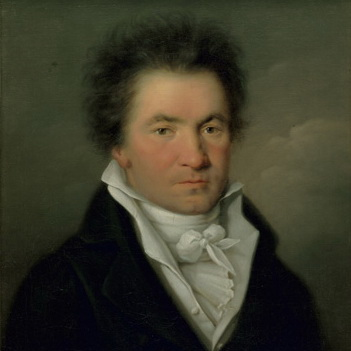
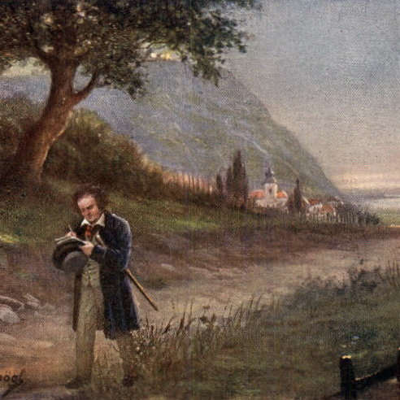
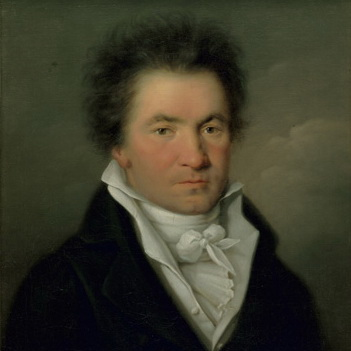
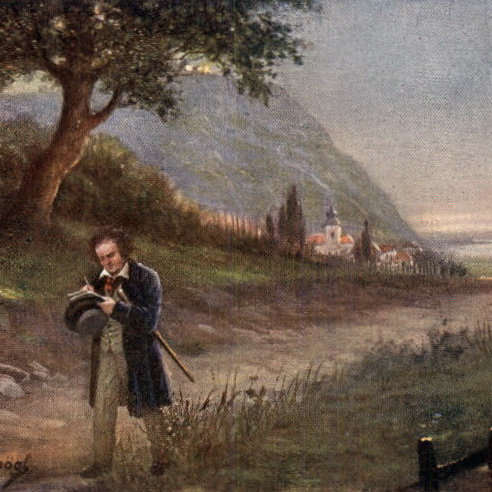

"To play without passion is inexcusable!"
Who is Beethoven? His name is Ludwig Van Beethoven. Beethoven was born in Bonn, Germany on December 16, 1770 and died on March 26, 1827 at the age of 56. He was a prominent figure in Classical music during the 17th-18th century. Beethoven was a German composer and musical figure in the Classical and Romantic eras of music. Beethoven's personal life was a tragedy. He struggled against deafness, but continued to pursue his career as a composer. Even though Beethoven struggled with deafness and could no longer hear well enough to properly play the piano, Beethoven composed some of his best music after he was deaf. In fact, a large amount of his best works were composed during the last 10 years of his life.
Fun Fact: Beethoven was almost completely deaf when he composed his Ninth Symphony, also known as "Ode to Joy."
  
 
Ludwig Van Beethoven: who is he? A man with temper! A temper so strong that he scared his maids away!
Did you know that one of his musical pieces (Rondo a Capriccio) is actually nicknamed as 'Rage Over a Lost Penny'?
One day, Beethoven had lost a golden penny. He quickly lost his temper and blamed his maid for stealing the penny. After yelling and screaming at her, she finally ran off as he hastily looked for the lost penny. His neighbors could overhear loud noises coming from Beethoven's apartment as he angrily threw furniture in an attempt to look for the lost penny. During that time, the people who happened to overhear the anger spewing from Beethoven's apartment also happened to know the piece he was currently working on: Rondo a Capriccio. This is where the nickname 'Rage Over a Lost penny' originated from. Beethoven was widely known for his temper during the 18th century. Many people were afraid to approach the infamous man. Despite this, Beethoven was loved. His music was very popular across Europe. In fact, when Beethoven died, over 20,000 people lined up on the streets of Vienna to attend his funeral.
❶ This is a painting by Franz Xaver Stober (1795-1858) that depicts Beethoven's funeral:

It's rather ironic, if you think about it, because Rondo a Capriccio is a very vibrant, exuberant piece.
It's full of enthusiasm, yet nicknamed after the legend of Beethoven's bad moods and unruly behavior.
❷ Here is a video of Dora Deliyska playing Rondo a Capriccio:
Sonata No. 21 in C Major, "Waldstein"
Piano Concerto No. 5, "Emperor"
Violin Concerto in D major, Op. 61
Symphony No. 6 in F Major, Op. 68, "Pastoral"
Fantasia For Piano, Chorus, and Orchestra in C Minor, Op. 80